Chapter 29: The Extremists and the Swadeshi Movement (1905-11)
The Extremists' fall (leaders arrested, deported, exiled) is the starting point of this chapter; Tilak at Mandalay and the Partition of 1905 are in both.
| Year | Paper | Topic | Answer |
|---|---|---|---|
| 1995 | Prelims | (Prelims 1995) | (C) East Bengal |
| 1996 | Prelims | (Prelims 1996) | (D) A-4 B-1 C-2 D-3 |
| 1999 | Prelims | (Prelims 1999) | (A) A-2 B-3 C-4 D-1 |
| 1999 | Prelims | (Prelims 1999) | (B) V.D. Savarkar |
| 2000 | Prelims | (Prelims 2000) | (B) the Bengal revolutionaries took shelter in Tripura |
| 2000 | Prelims | (Prelims 2000) | (A) A-1 B-3 C-4 D-2 |
Each failed approach bred a more radical successor, Pen then People then Guns then MG; the Revolutionaries were repressed but gave back pride, and their generation resurfaced in the INA.
Read it like a film first. Then go to the notes: every fact below is expanded there.
Story spine: After the Extremists fell by 1908, a small committed group chose armed struggle: repeat 1857 in the long run, heroic action now. Their secret societies and centres abroad fed a string of attacks (1907-12), the British answered with the CID and the Cellular Jail, and the phase ended repressed but not futile: it gave pride, helped bring 1911, and its Rash Behari Bose line runs to the INA.
| Character | Role in the story | Hook |
|---|---|---|
| P. Mitra (Pramathanath Mitra) | Founded the Anushilan Samiti in Calcutta, 1902 | The Parent |
| Barindra Kumar Ghosh | Jugantar organiser; death sentence commuted to the Cellular Jail | The Younger Brother |
| Aurobindo Ghosh | Alipore accused, defended by C.R. Das; fled to Pondicherry | The Escapee |
| Pulin Behari Das | Founded the Dacca Anushilan Samiti 1906; Barrah Dacoity | The Disciplinarian |
| V.D. Savarkar (Veer Savarkar) | Abhinav Bharat, Mazzini Charitra, the 1857 book; sentenced 1910 | The Narrator |
| Shyamji Krishna Varma | Founded the IHRS and India House 1905; The Indian Sociologist | The Voice in London |
| Madame Bhikaji Cama | Unfurled the first flag at Stuttgart, August 1907 | The Flag-bearer |
| Khudiram Bose | Muzzafarpur bomb-thrower, executed at 18 in 1908 | The Instant Martyr |
| Prafulla Chaki | Khudiram's partner at Muzzafarpur; killed himself | The Partner |
| Bal Gangadhar Tilak | Kesari's 'Arrival of Bomb'; six years at Mandalay | The Editor in Jail |
| Madan Lal Dhingra | Killed Curzon-Wyllie in London, 1909 | The London Strike |
| Rash Behari Bose | Delhi bomb 1912, Ghadar, IIL 1942, handed the INA to Netaji | The Bridge to the INA |
| Key term | In plain words |
|---|---|
| Propaganda of the deed | A single dramatic act (an assassination) meant to inspire the masses; the Jugantar method |
| Individual heroic action | The Revolutionaries' immediate method: kill hated officials to end fear of the British and arouse nationalism |
| Repeat 1857 | The long-term goal: a civil rebellion plus disaffection in the army |
| Anushilan Samiti | 1902 Calcutta body (P. Mitra): physical training outside, armed resistance inside |
| Jugantar | 'New Era': the anti-British newspaper (1906) and the loose party of Barindra Ghosh's group |
| Abhinav Bharat | Young India: the Savarkar brothers' society, renamed from Mitra Mela (1899) in 1904 at Pune |
| Dacoity (as funding) | Armed robbery of zamindars and moneylenders seen as collaborators, to pay for weapons, printing and travel |
| CID (1903) | A professional network of spies and informers set up after the Fraser Police Commission 1902 |
| IHRS and India House | Shyamji Krishna Varma's 1905 London society and its student hostel; journal The Indian Sociologist |
| Transportation for life | Imprisonment in the Cellular Jail (Kala Pani), Andamans: worse than death, isolating leaders without public hanging |
| Sedition | The charge used against Tilak in 1908 for 'Arrival of Bomb': condemn the act, explain the cause |
| IIL | Indian Independence League (1942): Rash Behari Bose's body for Indians in Southeast Asia that backed the first INA |
Remember it as Pen failed, People failed, Guns came out: a small group repeated the dream of 1857 by heroic action, was repressed, and still left pride, 1911 and the INA line.
| Year and paper | What was asked | The answer or trap | Where in this chapter |
|---|---|---|---|
| Prelims 1995 | The Barrah Dacoity was the first major venture of the revolutionary terrorists of the freedom movement in: (a) Bombay-Karnataka (b) Punjab (c) East Bengal (d) The Madras Presidency | (c) East Bengal. Barrah, near Dhaka, was the work of the Dacca Anushilan Samiti under Pulin Behari Das (1908). Bombay-Karnataka is the Savarkar stream; Punjab is the later Ghadar current. Slides: L33 slides 23-24 (typed, no ink) | Sections 2.3 and 3.2 |
| Prelims 1996 | Match: A. Abhinav Bharat Society B. Anushilan Samiti C. Ghadar Party D. Swaraj Party with 1. Sri Aurobindo Ghosh 2. Lala Hardayal 3. C.R. Das 4. V.D. Savarkar | (d) A-4 B-1 C-2 D-3. Abhinav Bharat = Savarkar; Anushilan = Aurobindo (the exam's pairing; see the alert below); Ghadar = Hardayal; Swaraj Party = C.R. Das. Slides: L33 slides 25-27 | Sections 2.1, 2.3, 2.4 |
| Prelims 1999 | Match persons with journals: A. Shyamji Krishna Varma B. Madam Bhikaji Cama C. Annie Besant D. Aurobindo Ghosh with 1. Bande Mataram 2. Indian Sociologist 3. The Talwar 4. Commonwealth | (a) A-2 B-3 C-4 D-1. Varma = The Indian Sociologist (this is in the handout); Cama = The Talwar; Besant = Commonwealth; Aurobindo = Bande Mataram (these three journal links come only from the slide explanation, not the handout). Slides: L33 slides 28-30 | Section 2.5 |
| Prelims 1999 | Abhinava Bharat, a secret society of revolutionaries, was organised by: (a) Khudiram Bose (b) V.D. Savarkar (c) Prafulla Chaki (d) Bhagat Singh | (b) V.D. Savarkar (with his brother Ganesh): Mitra Mela 1899 Nasik, renamed 1904 Pune. Bose and Chaki are the Muzzafarpur bombers; Bhagat Singh is the later 1920s generation. Slides: L33 slides 31-32 | Section 2.3 |
| Prelims 2000 | The native state of Tripura became involved in the Freedom Movement early in the 20th century because: (a) its kings were always anti-British (b) the Bengal revolutionaries took shelter in Tripura (c) its tribes were fiercely freedom-loving (d) groups were fighting the kingship and the British | (b). Organised militant nationalism was a Bengal story from 1902; Tripura, next door, sheltered the hunted Bengal network. Slides: L33 slides 33-35 | Section 2.1 |
| Prelims 2000 | Match: A. Chittagong Armoury Raid B. Abhinav Bharat C. Anushilan Samiti D. Kuka Movement with 1. Kalpana Dutt 2. Guru Ram Singh 3. Vinayak Damodar Savarkar 4. Aurobindo Ghosh | (a) A-1 B-3 C-4 D-2. Chittagong = Kalpana Dutt; Abhinav Bharat = Savarkar; Anushilan = Aurobindo (again the exam's pairing); Kuka = Guru Ram Singh. Slides: L33 slides 36-38 | Sections 2.1, 2.3, 3 intro (arms board) |
| Mains (none asked) | The teacher: "Mains - potential FYQ (no PYQ)." The bank's two Mains items are generic practice prompts, not UPSC questions | Skeletons below | The whole chapter |
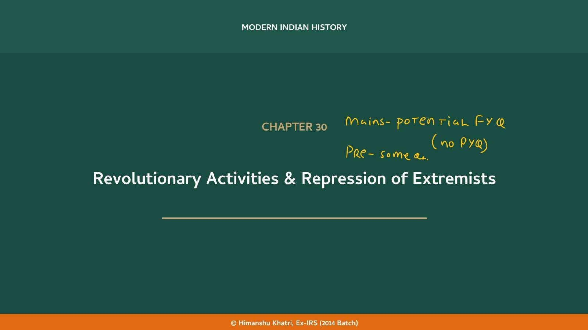
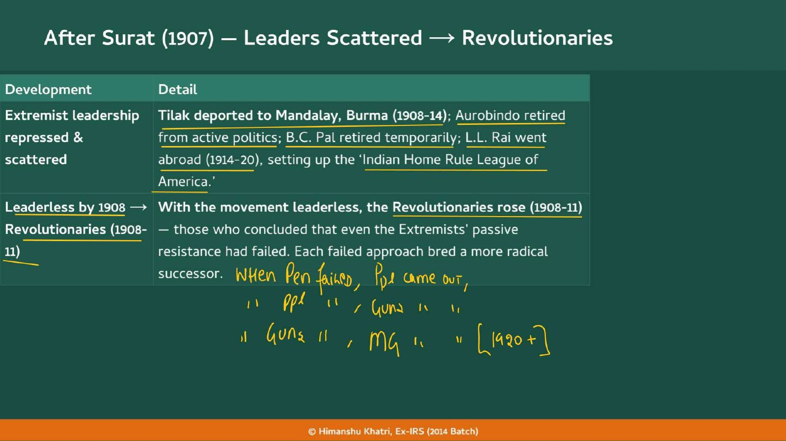
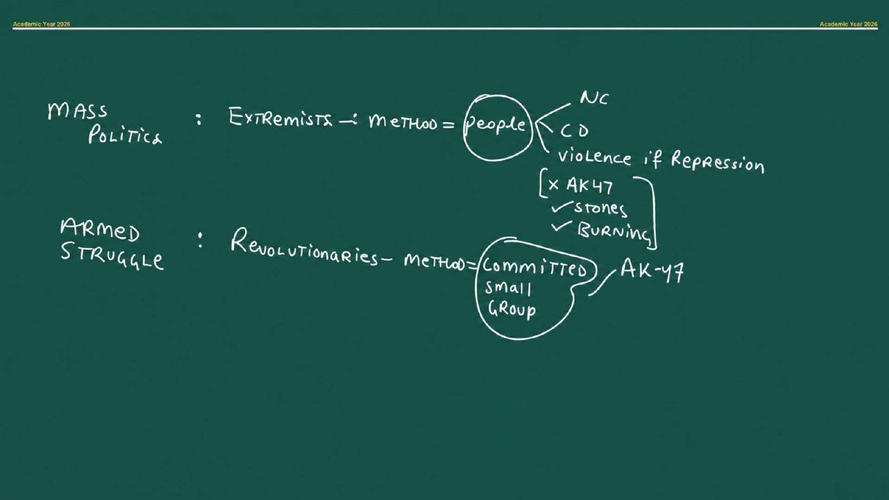
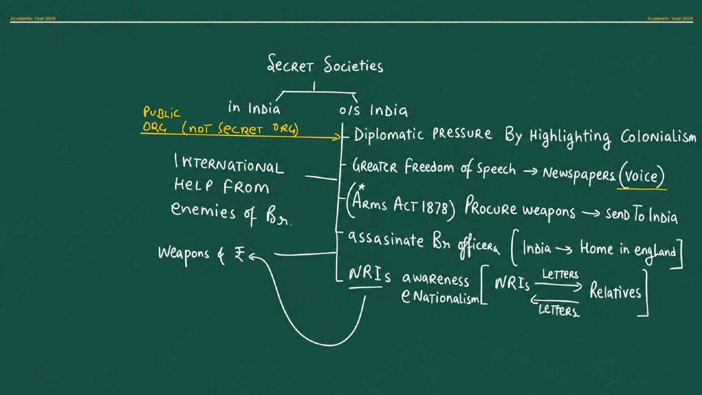
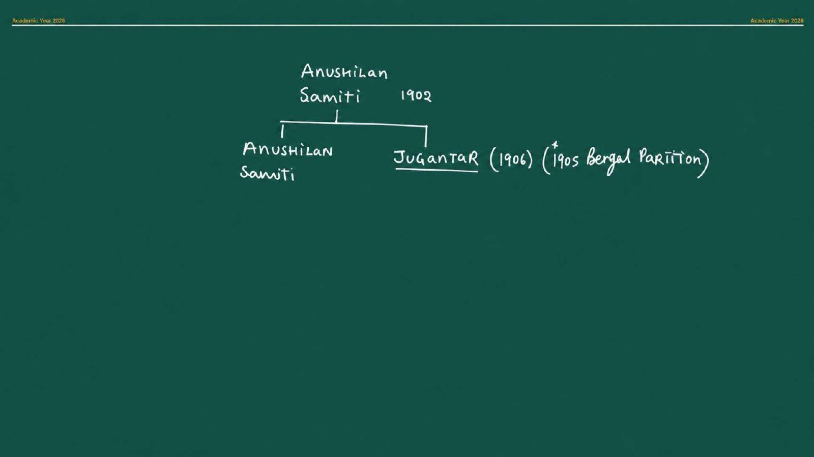
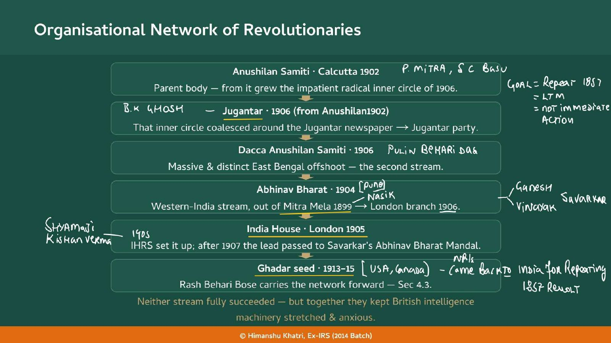
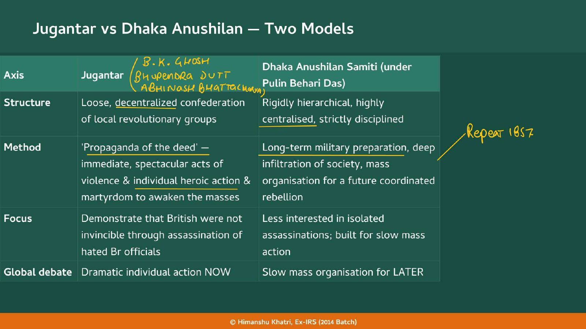
| Axis | Jugantar | Dhaka Anushilan Samiti |
|---|---|---|
| Structure | Loose, decentralised confederation of local revolutionary groups | Rigidly hierarchical, highly centralised, strictly disciplined |
| Method | 'Propaganda of the deed': immediate, spectacular acts of violence, individual heroic action and martyrdom to awaken the masses | Long-term military preparation, deep infiltration of society, mass organisation for a future coordinated rebellion |
| Focus | Demonstrate that the British were not invincible through assassination of hated British officials | Less interested in isolated assassinations; built for slow mass action |
| Global debate | Dramatic individual action NOW | Slow mass organisation for LATER |
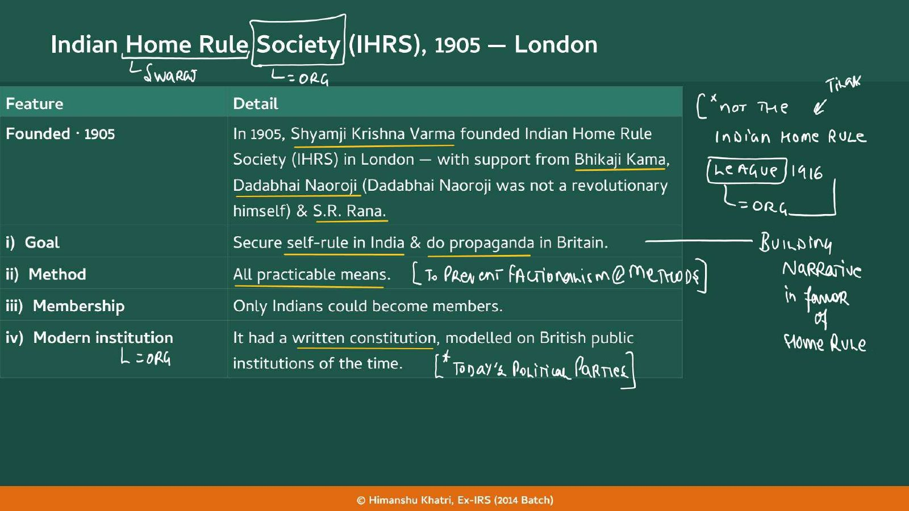
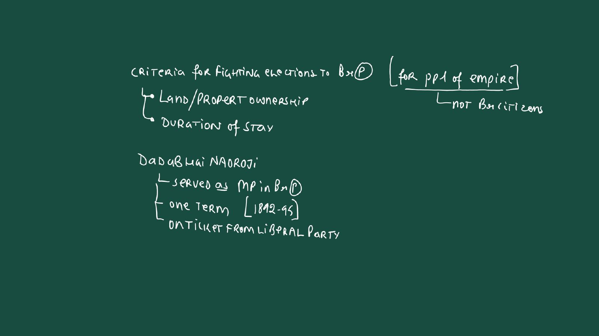
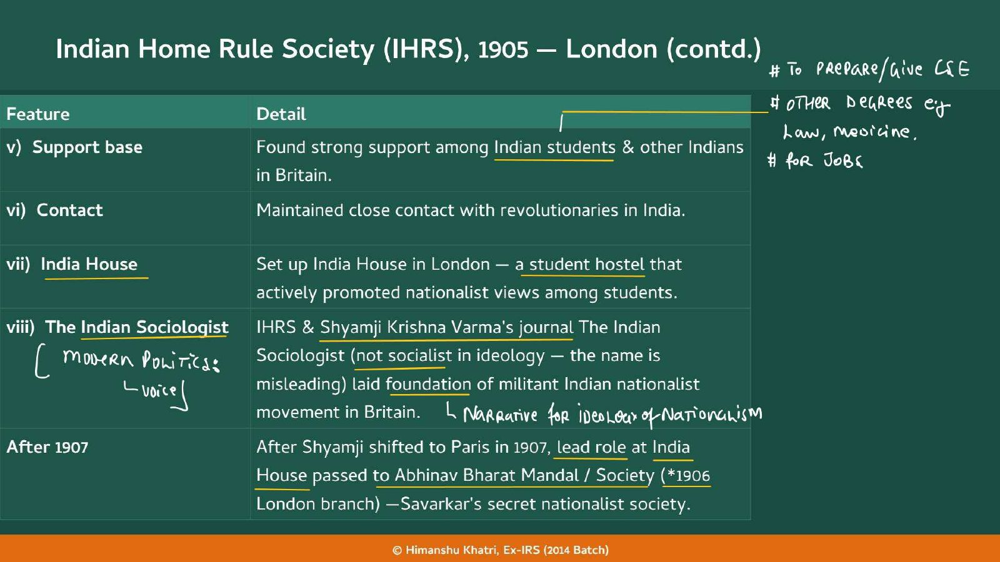
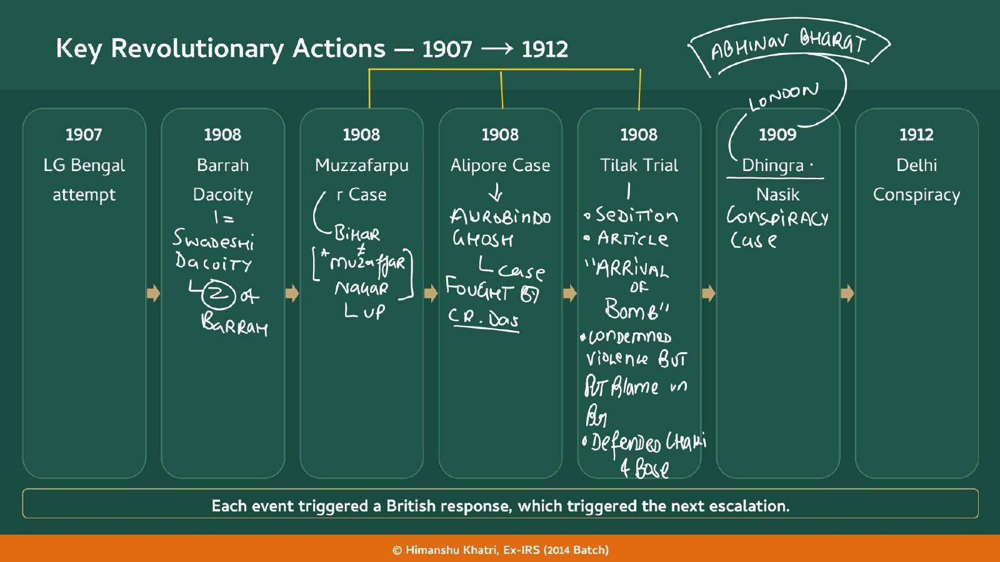
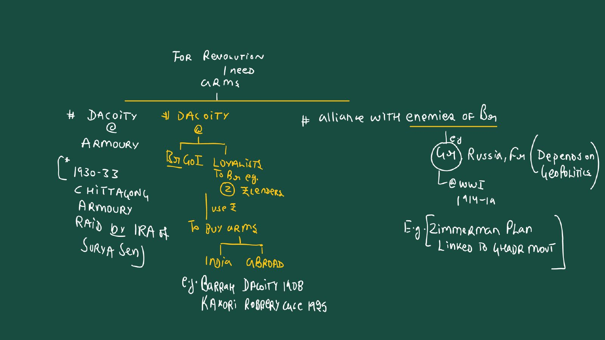
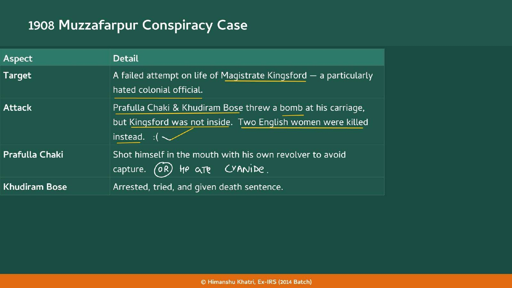
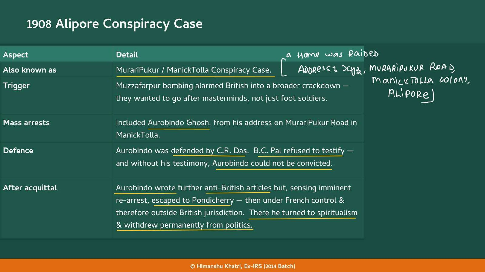
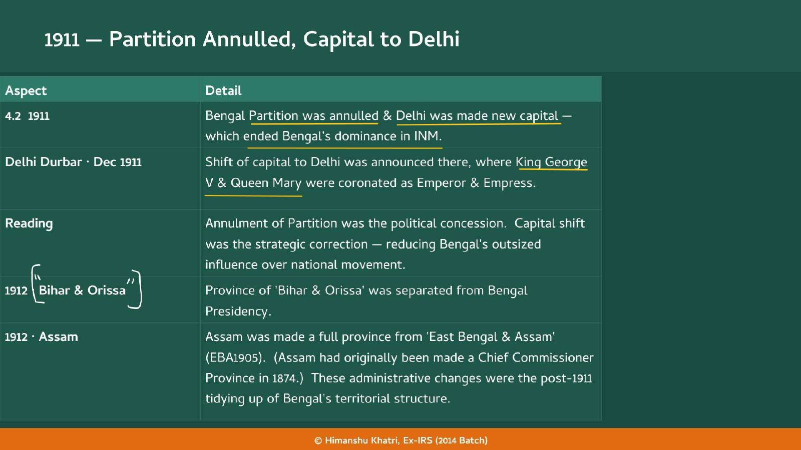
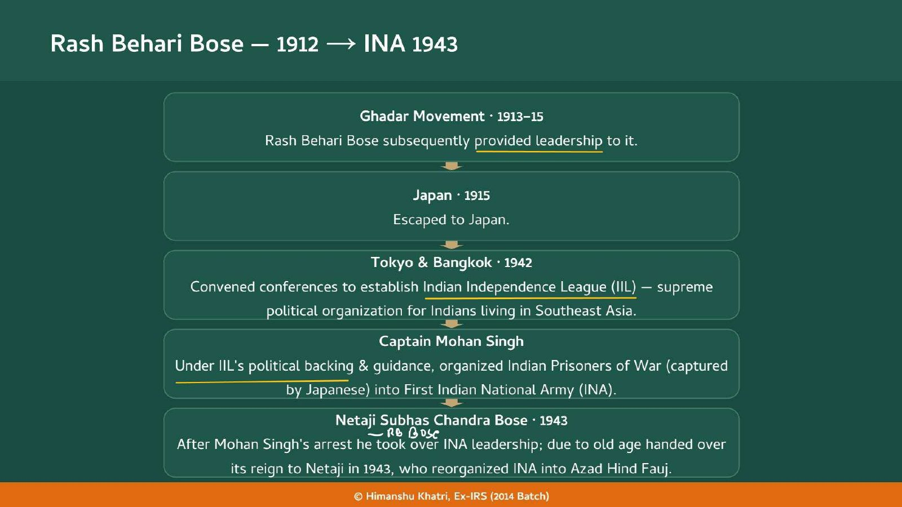
| Organisation | Year and place | Leader | Teacher's or handout's key point |
|---|---|---|---|
| Anushilan Samiti | 1902, Calcutta | P. Mitra (Satish Chandra Basu ran the Calcutta body) | Physical training and character building outside, armed resistance inside; parent body |
| Jugantar | 1906, Bengal | Barindra Kumar Ghosh, Bhupendranath Datta, Abinash Bhattacharya | Newspaper and party; loose; propaganda of the deed; broken by Alipore |
| Dacca Anushilan Samiti | 1906, East Bengal | Pulin Behari Das (backed by P. Mitra, Bipin Chandra Pal) | Hierarchical; long-term preparation; Barrah Dacoity 1908 |
| Mitra Mela, then Abhinav Bharat | 1899 Nasik; 1904 Pune; London branch 1906 | Savarkar brothers, Vinayak (Veer Savarkar) and Ganesh | Young India after Mazzini's Young Italy; Dhingra and Nasik 1909 |
| Indian Home Rule Society (IHRS) | 1905, London | Shyamji Krishna Varma (support: Cama, Naoroji, S.R. Rana) | India House hostel; The Indian Sociologist; lead passed to Abhinav Bharat after 1907 |
| Indian Independence League (IIL) | 1942, Tokyo and Bangkok | Rash Behari Bose | Supreme political body for Indians in Southeast Asia; backed Mohan Singh's first INA |
| Year | What happened |
|---|---|
| 1830 | Mazzini's Young Italy active in the revolts of 1830 (Savarkar's model for Abhinav Bharat) |
| 1861 | Indian Police Act: the foundational policing law the CID goes beyond |
| 1870 | Italian unification finally succeeds (Mazzini's goal) |
| 1874 | Assam made a Chief Commissioner Province |
| 1878 | Arms Act (the teacher stars it: weapons hard to get in India) |
| 1892 | Dadabhai Naoroji's one term as an MP in the British Parliament begins (to 1895), on a Liberal ticket |
| 1899 | Savarkar brothers set up Mitra Mela in Nasik |
| 1902 | Fraser Police Commission; P. Mitra founds the Anushilan Samiti in Calcutta ★ |
| 1903 | CID formally established ★ |
| 1904 | Mitra Mela renamed Abhinav Bharat (Young India) in Pune ★ |
| 1905 | Shyamji Krishna Varma founds the IHRS and India House in London; Bengal Partition (Curzon 99-05) ★ |
| 1906 | Jugantar newspaper and party; Dacca Anushilan Samiti (Pulin Behari Das); Barisal Conference (April); All Bengal Conference of Revolutionary Groups; Savarkar in London, Mazzini Charitra ★ |
| 1907 | Surat split; attempt on the Lieutenant Governor of Bengal (failed); Madame Cama unfurls the first flag at Stuttgart (August); Shyamji shifts to Paris ★ |
| 1908 | Barrah Dacoity; Muzzafarpur (Kingsford, Chaki, Khudiram Bose executed at 18); Alipore Case; Tilak trial (six years, Mandalay); leaderless Swadeshi ★ |
| 1909 | Dhingra kills Curzon-Wyllie (London); Kanhere kills Jackson (Nasik Conspiracy Case); Morley-Minto Reforms; Savarkar's The Indian War of Independence 1857 ★ |
| 1910 | Savarkar sentenced to transportation for life (Cellular Jail) ★ |
| 1911 | Partition annulled; Delhi made the capital; Delhi Durbar (December), George V and Queen Mary ★ |
| 1912 | Delhi Conspiracy: bomb on Hardinge 10-16; Bihar and Orissa separated; Assam a full province ★ |
| 1913 | Ghadar Movement begins (to 1915), led later by Rash Behari Bose |
| 1915 | Rash Behari Bose escapes to Japan |
| 1916 | Tilak's Indian Home Rule League (not the IHRS) |
| 1942 | Rash Behari Bose convenes Tokyo and Bangkok conferences: Indian Independence League (IIL) |
| 1943 | Netaji Subhas Chandra Bose takes over; INA reorganised as the Azad Hind Fauj |
The Extremists' fall (leaders arrested, deported, exiled) is the starting point of this chapter; Tilak at Mandalay and the Partition of 1905 are in both.
The Morley-Minto Reforms of 1909 are read partly as a reform to buy peace after revolutionary anxiety.
Rash Behari Bose gives leadership to Ghadar; Barindra Kumar Ghosh cannot be in Ghadar because he was in the Cellular Jail from 1908; the teacher's Zimmerman Plan link.
Do not confuse Shyamji's IHRS of 1905 with Tilak's Indian Home Rule League of 1916 (the teacher's warning on slide 1).
The Chittagong Armoury Raid (Surya Sen, Kalpana Dutt) and Kakori 1925 on the teacher's arms board belong to the later generation.
The INA line: Rash Behari Bose, the IIL, Mohan Singh, Netaji and the Azad Hind Fauj (1943).
The long-term goal is to repeat 1857, and Savarkar's 1909 book recasts it as a planned war of national liberation.
Read the question, answer in your head, then tap to check.
| What were the two answers of the Revolutionaries? | Long term: repeat 1857 (civil rebellion plus disaffection in the army). Immediate: individual heroic action (assassinate hated officials) to strike fear into the British, remove fear from Indians and arouse nationalism. |
| How did the Revolutionaries use the courtroom? | A public trial was a platform for propaganda; a death sentence was a supreme sacrifice that could inspire others. |
| The teacher's chain of failed approaches? | When Pen failed, People came out; when People failed, Guns came out; when Guns failed, MG (Mahatma Gandhi) came out [1920+]. |
| Mass politics versus armed struggle on the teacher's board? | Mass politics = Extremists, method = people (NC, CD, violence only if repression: stones and burning, not AK-47). Armed struggle = Revolutionaries, method = a committed small group (AK-47). |
| Who founded the Anushilan Samiti, and when? | Pramathanath Mitra (P. Mitra), in Calcutta in 1902; Satish Chandra Basu ran the Calcutta body. Outer form: physical training; inner purpose: armed resistance. |
| Who founded the Jugantar and what is it? | Barindra Kumar Ghosh (Aurobindo's younger brother), Bhupendranath Datta and Abinash Bhattacharya, around the Jugantar newspaper (1906), 'New Era'; the network became the Jugantar party. |
| Jugantar versus Dhaka Anushilan? | Jugantar: loose, decentralised, propaganda of the deed, assassination, NOW. Dhaka (Pulin Behari Das, 1906): rigidly hierarchical, long-term military preparation, slow mass action, LATER (the teacher: Repeat 1857). |
| What was the CID (1903)? | The Criminal Investigation Department: a professionalised network of spies and informers, set up after the Fraser Police Commission of 1902, beyond the Indian Police Act of 1861, to track, infiltrate and dismantle dissent. |
| Abhinav Bharat: dates and founders? | Savarkar brothers Vinayak and Ganesh: Mitra Mela 1899 (Nasik), renamed Abhinav Bharat or Young India in 1904 (Pune); London branch 1906. Inspiration: Mazzini's Young Italy. |
| What did Savarkar write? | Mazzini Charitra (1906, a translation of Mazzini's writings, compiled in London) and The Indian War of Independence 1857 (1909), which recast 1857 as a planned war of national liberation; banned before publication; the teacher: "Narrative: imp". |
| The teacher's five reasons for centres abroad? | VOICE: diplomatic pressure (highlighting colonialism), free speech and newspapers (Voice), procure weapons (Arms Act 1878), assassinate officers at Home in England, NRIs' awareness (letters to relatives); weapons and money from enemies of Britain. |
| Who set up centres abroad, and where? | Savarkar (London), Hardayal (USA), Shyamji Krishna Varma (London, Paris from 1907), Madame Cama (Paris), Ajit Singh. Mnemonic: Some Heroes Stayed Clear Abroad. |
| What did Madame Cama do in 1907? | In August 1907 she unfurled the first version of the Indian national flag at the International Socialist Congress in Stuttgart, Germany. |
| IHRS 1905: who and what? | Founded in London by Shyamji Krishna Varma with Cama, Naoroji (not a revolutionary) and S.R. Rana; self-rule and propaganda in Britain; all practicable means; only Indians; written constitution; India House hostel; The Indian Sociologist. |
| IHRS versus Home Rule League? | IHRS = 1905, London, Shyamji Krishna Varma; Indian Home Rule League = 1916, Tilak (the teacher's warning). |
| Who took the lead at India House after 1907? | The Abhinav Bharat Mandal (Savarkar's secret society), after Shyamji shifted to Paris. |
| The teacher's three routes to arms? | Dacoity at an armoury (Chittagong 1930-33, Surya Sen), dacoity at the Government or loyalists, e.g. zamindars and moneylenders (Barrah 1908, Kakori 1925), alliance with enemies of Britain (WWI, Zimmerman Plan, Ghadar). Mnemonic: ARM. |
| Barrah Dacoity 1908? | A Swadeshi dacoity in Dhaka, East Bengal by the Dacca Anushilan Samiti under Pulin Behari Das; the Zamindar of Barrah's house was looted to fund the revolution. Prelims 1995: East Bengal. |
| Muzzafarpur 1908? | Target Magistrate Kingsford; Prafulla Chaki and Khudiram Bose bombed his carriage but he was not inside and two English women died; Chaki killed himself (revolver, or cyanide); Khudiram, 18, was executed and became a martyr. |
| Alipore Case 1908: names and outcome? | Also Murari Pukur or Manick Tolla; Aurobindo arrested, defended by C.R. Das, B.C. Pal refused to testify, so no conviction; he fled to Pondicherry and spiritualism. Barindra and Ullaskar Dutta: death, commuted to the Cellular Jail. |
| Why can Barindra not be in the Ghadar Movement? | He was transported to the Cellular Jail from 1908, cut off from all revolutionary activity on the mainland (Ghadar is 1913-15). |
| Why was "transportation for life" worse than death? | Isolation, brutal prison conditions, permanent removal from the mainland; it eliminated leaders without making martyrs by public hanging. Savarkar got it in 1910. |
| Tilak's 1908 trial? | Kesari (Marathi) article "Arrival of Bomb": condemned the violence but defended Chaki and Bose (oppression breeds violence); charged with sedition; six years, Mandalay; defended by Jinnah. |
| Jinnah in 1908? | A young constitutional lawyer with nationalist sympathies, not yet Muslim League leader; he took Tilak's case on principle; same side then, 1940 Pakistan demand later. |
| 1909 Abhinav Bharat actions? | Dhingra killed Lt. Col. Curzon-Wyllie in London (an adviser to the Secretary of State, not Curzon 99-05); Kanhere killed District Magistrate Jackson at Nasik with a pistol Savarkar sent; Savarkar to the Cellular Jail in 1910. |
| Results of the Revolutionary phase? | Pride and dignity (active agents, not passive subjects); Morley-Minto 1909 as a reform to buy peace; 1911 Partition annulled and Delhi the capital; Rash Behari Bose's line to the INA. |
| What happened in 1911 and 1912? | 1911: Partition annulled, Delhi the capital (Durbar, December, George V). 1912: Bihar and Orissa separated from Bengal, Assam a full province (Chief Commissioner Province 1874), Delhi Conspiracy. |
| Annulment versus capital shift? | Annulment = the political concession; capital shift = the strategic correction that reduced Bengal's outsized influence. |
| Curzon 99-05's contradictory legacy? | The Partition was reversed (1911) and the capital moved from Calcutta, so Swadeshi succeeded narrowly; but the larger design of 1905 (divide Hindus and Muslims, undercut Bengal, shift capital) was substantially achieved. |
| Delhi Conspiracy 1912? | Rash Behari Bose threw a bomb from a balcony at Viceroy Hardinge 10-16 on an elephant in Chandni Chowk, during the capital-shift procession; Hardinge was wounded and survived. |
| Rash Behari Bose to the INA? | Ghadar leadership (1913-15), Japan (1915), IIL at Tokyo and Bangkok (1942), under which Mohan Singh organised POWs into the first INA; after Mohan Singh's arrest he took over, then handed to Netaji (1943), who made it the Azad Hind Fauj. |
| Prelims 1999 journals? | Varma = The Indian Sociologist; Cama = The Talwar; Besant = Commonwealth; Aurobindo = Bande Mataram. Only Varma's is in the handout. |
| Why did Tripura enter the freedom story (Prelims 2000)? | The Bengal revolutionaries took shelter in Tripura. |
| Mains skeleton: "Examine the major themes of Chapter 30" (bank, 250 words)? | Intro: Extremists gone by 1908; two goals (repeat 1857, heroic action). Body: organisation, actions and escalation, repression (CID, Cellular Jail), results. Closing: repressed but not nothing; resurfaced in more organised forms (RB Bose to INA). |
| Mains skeleton: "Significance of these events for the INM" (bank, 150 words)? | Cause to consequence: Khudiram executed gives a martyr; Alipore breaks Jugantar; Tilak trial stretches sedition; Morley-Minto buys peace; 1911 reduces Bengal's influence. Closing: the line from 1912 to the INA 1943 runs through Rash Behari Bose. |
| Mains skeleton: "Compare Jugantar and the Dhaka Anushilan" (practice from the teacher's table)? | Structure (loose against hierarchical), method (propaganda of the deed against long-term preparation), focus (assassination against slow mass action), debate (NOW against LATER); neither fully succeeded but both kept British intelligence stretched. |
Tap the card to flip.